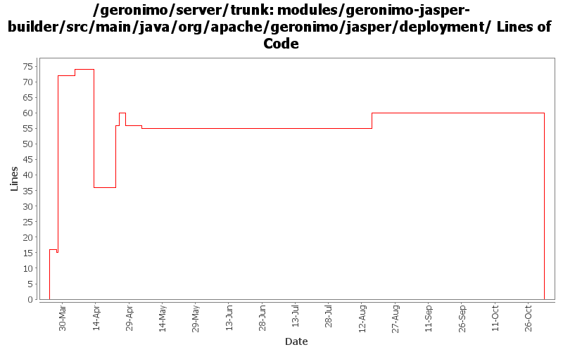

[root]/modules/geronimo-jasper-builder/src/main/java/org/apache/geronimo/jasper/deployment

| Author | Changes | Lines of Code | Lines per Change |
|---|---|---|---|
| Totals | 14 (100.0%) | 171 (100.0%) | 12.2 |
| djencks | 6 (42.9%) | 131 (76.6%) | 21.8 |
| jbohn | 3 (21.4%) | 17 (9.9%) | 5.6 |
| gawor | 1 (7.1%) | 10 (5.8%) | 10.0 |
| rickmcguire | 1 (7.1%) | 9 (5.3%) | 9.0 |
| kevan | 1 (7.1%) | 3 (1.8%) | 3.0 |
| hogstrom | 1 (7.1%) | 1 (0.6%) | 1.0 |
| prasad | 1 (7.1%) | 0 (0.0%) | 0.0 |
GERONIMO-3565. Modules distributed amongst framework/modules and plugins
0 lines of code changed in 1 file:
espace spaces with %20 when creating a URI (GERONIMO-3324)
10 lines of code changed in 1 file:
GERONIMO-3246 Cleanup exception handling so stack traces for first failures are not discarded.
9 lines of code changed in 1 file:
GERONIMO-3134 GERONIMO-3136 Fix app client refs including ejb refs. Get a lot closer to jpa working on the app client
1 lines of code changed in 1 file:
GERONIMO-3131 GERONIMO-3132 GERONIMO-3133 GERONIMO-3134 Defaults for persistence units. Supply locations of jars with persistent classes to the PersistenceUnitInfo. Match a ref with not persistence unit specified to a unique match. Allow wars to have jndi references pointing to the war module, not just the ear
1 lines of code changed in 1 file:
GERONIMO-3051 - revert 532106 changes now that 533154 is integrated
2 lines of code changed in 1 file:
GERONIMO-3051 Fix DB Viewer portlet error - patch from Frank G with a tweak to the jasper builder so things will build
6 lines of code changed in 1 file:
GERONIMO-3109 handle dtd to schema conversion related to body-content element
20 lines of code changed in 1 file:
GERONIMO-3007 JspModuleBuilderExtension does not need to extract files itself
21 lines of code changed in 1 file:
GERONIMO-3056 - clean up WARNING messages on JARS - thanks Jay McHugh!
9 lines of code changed in 1 file:
Changed documentation to avoid JavaDoc compilation error. Sun bug 5082928. Merged from https://svn.apache.org/repos/asf/geronimo/server/branches/2.0-M4 r524554.
1 lines of code changed in 1 file:
GERONIMO-3029 Tests for tld conversions. Thanks Tim
72 lines of code changed in 1 file:
GERONIMO-3024 Committing patch supplied by Tim McConnell. Thanks Tim! Convert blank char to %20 when constructing URI
3 lines of code changed in 1 file:
GERONIMO-2965 GERONIMO-3008 GERONIMO-3010 Tomcat annotation processing with lots of other improvements. Uses LifecycleProvider interface proposed in GERONIMO-3010
16 lines of code changed in 1 file: